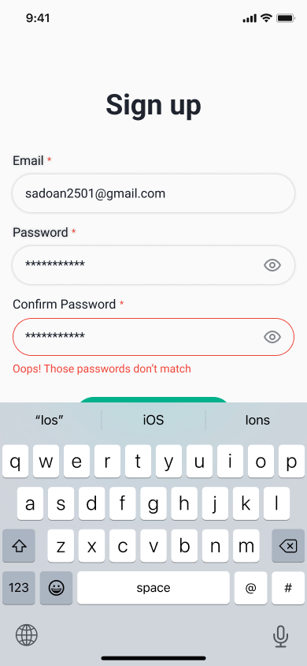

AvailableSẵn sàng nhận vị trí UX/UI Designer · Front-end Developer
DesigningExperiencesThat Matter.
Lê Đức Nam Khánh · UX/UI Designer · Front-end Developer · Đà Nẵng
Định hướng phát triển chuyên sâu từ nghiên cứu hành vi người dùng (UX Research), chuẩn hóa Design System trên Figma đến lập trình giao diện tương tác cao cấp (Front-end Development).
Tôi biến những bài toán phức tạp thành trải nghiệm kỹ thuật số trực quan, thanh lịch và giàu cảm xúc.
Chạm trực tiếp vào màn hình điện thoại hoặc chọn tab bên trên · Rê chuột để xoay 3D
01 / Case Studies
Dự Án UX/UI Tiêu Biểu
Giải quyết bài toán thực tế bằng quy trình lấy người dùng làm trung tâm (User-Centered Design)
2025Lead UX/UI Designer & Front-end DeveloperHorus Academy
⭐ Featured Project
FROGGY Mobile App
Ứng Dụng Quản Lý Chi Tiêu & Chăm Sóc Tài Chính Gamified Cho Gen Z
Vấn đề:
78% bạn trẻ từ bỏ việc ghi chép sau 7 ngày đầu vì các app kế toán truyền thống quá khô khan, bắt nhập quá nhiều trường dữ liệu và thiếu kết nối cảm xúc.
Giải pháp:
Ứng dụng quản lý tài chính có cơ chế "3-Tap Quick Log" ghi chép trong 4 giây, biểu đồ trực quan và linh vật Ếch tương tác theo tâm trạng tài chính.
2024Team Leader · Agile Scrum & UX ArchitectureĐại Học Greenwich
Urban Safety
SafeMap Mobile App
Điều Hướng Tuyến Đường An Toàn & Cảnh Báo Ngập Lụt Đô Thị Thời Gian Thực
Vấn đề:
Mùa mưa bão miền Trung khiến các tuyến đường trũng tại Đà Nẵng ngập sâu bất ngờ. Ban đêm, sinh viên và người đi làm về muộn đối mặt với các ngõ vắng thiếu đèn. Google Maps không cảnh báo được rủi ro an ninh và ngập lụt cục bộ.
Giải pháp:
Hệ thống bản đồ an toàn đề xuất "Safe Route" (Tuyến đường an toàn có đèn & đông dân cư), cảnh báo điểm ngập theo thời gian thực từ cộng đồng và tích hợp nút cứu hộ SOS 1 chạm.
92%Chọn Safe Route
< 4.8sBáo sự cố tức thì
4.8 / 5Độ an tâm của người dùng
Safe Route Active Ngập 35cm (Tránh)
1-Tap Emergency SOS Ready
02 / Technical Foundation & Credentials
Nền Tảng Đào Tạo & Kỹ Năng
Sự kết hợp giữa tư duy thiết kế trải nghiệm người dùng và nền tảng kỹ thuật phần mềm vững chắc
Năng Lực Thiết Kế & Lập Trình
Bridge the Gap between Design & Production Code
UX Research & Product Strategy
Phỏng vấn người dùng, khảo sát định lượng, xây dựng User Persona, User Journey Map, Information Architecture và kiểm thử khả dụng (Usability Testing SUS).
UI Design & Design Systems
Thành thạo Figma nâng cao (Auto-Layout 5.0, Component Set, Variants, Design Tokens, Variables), tương tác vi mô (Micro-interactions), Responsive Mobile-first UI.
Front-end & Creative Web
HTML5 Semantics, Modern CSS3/SCSS (Flexbox/Grid, Glassmorphism, Keyframes), JavaScript ES6+, React, TypeScript, Three.js 3D WebGL, Git/GitHub, Agile Scrum.
78% bạn trẻ thế hệ Gen Z bắt đầu ghi chép chi tiêu cá nhân nhưng từ bỏ chỉ sau 7 ngày đầu tiên.
Khi phỏng vấn người dùng, chúng tôi nhận thấy các ứng dụng quản lý tài chính hiện hành trên thị trường (như Excel, Money Lover, các ứng dụng sổ thu chi truyền thống) đang mắc phải hội chứng Cognitive Overload (Quá tải nhận thức):
Quá nhiều bước nhập liệu
Để lưu một cốc cà phê 35.000đ, người dùng phải đi qua 5-6 trường: Danh mục cha, Danh mục con, Ví thanh toán, Ngày giờ, Ghi chú, Thuế.
Tâm lý sợ hãi (Financial Anxiety)
Các con số màu đỏ báo hiệu thâm hụt và bảng biểu kế toán khô khan tạo cảm giác "tội lỗi", khiến người dùng trốn tránh mở app.
Thiếu vòng lặp tạo thói quen
Không có phần thưởng vi mô (Micro-delight) hay động lực tích cực nào để người dùng muốn quay lại ứng dụng mỗi ngày.
Câu hỏi định hướng (How Might We):
"Làm thế nào để biến việc ghi chép chi tiêu từ một nghĩa vụ kế toán căng thẳng thành một thói quen nhẹ nhàng, vui vẻ và hoàn tất chỉ trong vòng dưới 5 giây?"
02
Nghiên Cứu Người Dùng (UX Research & Insights)
Chúng tôi triển khai khảo sát định lượng trên 64 sinh viên và bạn trẻ đi làm (18 - 25 tuổi) tại Đà Nẵng kết hợp phỏng vấn sâu 8 đối tượng.
85%Chỉ cần biết 2 con số cốt lõi: "Hôm nay mình đã tiêu bao nhiêu?" và "Còn lại bao nhiêu để tiêu?"
91%Thừa nhận lười gõ bàn phím văn bản cho từng khoản chi nhỏ lẻ (dưới 50.000đ).
72%Có thiện cảm mạnh mẽ với các ứng dụng sử dụng Mascot (Linh vật thương hiệu) có tính cách vui nhộn như Duolingo.
💡 3 Insight Quyết Định Thiết Kế:
Tốc độ quan trọng hơn sự chi tiết: Người dùng thà ghi một khoản gần đúng trong 3 giây còn hơn là phải phân loại chuẩn mực kế toán trong 30 giây.
Visual hóa dòng tiền thay vì bảng số: Màu sắc và thanh tiến độ trực quan giúp giảm 65% áp lực tinh thần so với bảng số âm đỏ rực.
Thiết kế cảm xúc (Emotional Design): Một linh vật biết biểu cảm khi tiết kiệm đúng mục tiêu tạo ra động lực duy trì liên tục (Habit loop).
03
Chân Dung Người Dùng (User Persona & Pain Points)
Nguyễn Minh Anh, 20 tuổi
Sinh viên năm 2 · Đà Nẵng
Gen ZLàm thêm part-timeThích trà sữa & du lịch
“Mỗi lần đi cà phê với bạn bè hết 35k mà phải mở app kế toán chọn 4 cấp danh mục thì mình thà nhịn ghi luôn cho đỡ mệt đầu.”
Mục tiêu (Goals)
Dành dụm 1.500.000đ mỗi tháng để đổi laptop mới phục vụ học tập.
Biết chính xác hôm nay mình còn bao nhiêu tiền trong ví mà không cần mở tài khoản ngân hàng tính nhẩm.
Xây dựng thói quen quản lý tài chính không áp lực.
Nỗi đau (Pain Points)
Hay quên ghi chép ngay sau khi trả tiền vì quy trình app cũ quá chậm.
Cảm giác tội lỗi và chán nản mỗi khi thấy số dư bị âm.
Giao diện các ứng dụng hiện tại phức tạp như phần mềm kế toán doanh nghiệp.
04
Luồng Người Dùng & Kiến Trúc Thông Tin (The 3-Tap Quick Log)
Để giải quyết vấn đề ma sát nhập liệu, chúng tôi thiết kế lại luồng ghi chép cốt lõi theo cơ chế "3-Tap Quick Log":
1
Mở App
Bàn phím số thông minh sẵn sàng ngay màn hình chính
2
Chạm Số Tiền
Gõ số tiền bằng phím số lớn (VD: gõ 35.000)
3
Chạm Danh Mục
1 chạm vào icon Cafe / Ăn uống được gợi ý tự động
Hoàn Tất!
Mascot chúc mừng, cập nhật số dư ví trong 4.2 giây
05
Từ Bản Phác Thảo Đến Hoàn Thiện (Wireframe & Iterations)
Bản phác thảo ban đầu (Lo-Fi)
Thất bại của mẫu Form truyền thống
Bắt người dùng mở pop-up modal che khuất màn hình.
Thời gian hoàn thành tác vụ trung bình: 18.4 giây.
Tỷ lệ người dùng thử nghiệm bỏ dở giữa chừng: 38%.
Thiết kế hoàn thiện (Hi-Fi)
Đột phá với giao diện trực quan 1 chạm
Bàn phím số tích hợp trực tiếp, danh mục thông minh tự học thói quen.
Thời gian hoàn thành tác vụ giảm xuống: 4.2 giây (giảm 77%).
Tỷ lệ hoàn thành tác vụ tăng vọt lên: 94%.
06
Hệ Thống Thiết Kế & Linh Vật Cảm Xúc (Design System & Mascot)
Hệ thống Color Tokens chuẩn quốc tế
Mint Sage#73C2B4Primary / Brand Refresh
Forest Emerald#2E7D67Deep Accent / Contrast
OLED Dark Zinc#09090BBackground / Surface
Soft Coral#FF6B6BFriendly Expense Alert
Thiết kế cảm xúc qua 3 trạng thái của Chú Ếch FROGGY:
🟢 Tiết Kiệm Tốt (Saver Mood)
Xuất hiện khi người dùng ghi nhận khoản tiết kiệm hoặc chi tiêu dưới 70% ngân sách.
🟡 Cân Nhắc Tài Chính (Analytic Mood)
Xuất hiện ở mục Báo cáo tháng & Tips để nhắc nhở người dùng quy tắc 50/30/20.
🐸⚠️
🔴 Cảnh Báo Thân Thiện (Gentle Alert)
Nhắc nhở nhẹ nhàng khi sắp chạm ngưỡng chi tiêu tuần, không dùng từ ngữ gây áp lực.
07
Thư Viện Giao Diện Hoàn Thiện (High-Fidelity UI Gallery)
Trọn bộ 7 màn hình hoàn thiện được thiết kế trực tiếp trên Figma với tỷ lệ chuẩn iPhone 390x844px, áp dụng Design System Mint Sage và hệ thống component Auto-layout:
01. Splash Screen
Nhận diện thương hiệu Mint Sage (#73C2B4) kết hợp linh vật Ếch ôm túi vàng tạo cảm giác hứng khởi.
02. Social Welcome
Tối ưu hóa phễu onboarding với Social Login Google, Apple, Facebook và tùy chọn mật khẩu riêng.
03. Login Experience
Giao diện nhập liệu tối giản, ghi nhớ mật khẩu và bố cục phím số tương tác dễ chịu trên di động.
04. Inline Validation
Xử lý trạng thái lỗi tinh tế với thông báo 'Password is incorrect' màu đỏ mềm, bàn phím iOS tích hợp chân thực.
05. Quick Registration
Form đăng ký tài khoản nhanh chóng, cắt giảm các bước phụ để giữ chân người dùng trong 30 giây đầu.

06. Password Mismatch
Cảnh báo lỗi nhập lại mật khẩu ngay tức thì, tránh tình trạng submit form mới biết có lỗi.
07. Stay On Track (Mascot Advice)
Màn hình tư vấn chi tiêu với chú Ếch thông thái, giới thiệu quy tắc 50/30/20 và hệ thống carousel.
Trực Tiếp File Thiết Kế Figma Gốc (Interactive Figma Canvas)
Bạn có thể phóng to, thu nhỏ, cuộn và kiểm tra toàn bộ artboards, flow tương tác và Design System của FROGGY ngay bên dưới:
Kiểm Thử Khả Dụng & Kết Quả Đo Lường (Usability Testing)
Chúng tôi tiến hành kiểm thử khả dụng với 8 người dùng thực tế theo kịch bản: "Ghi lại một khoản chi tiêu 35.000đ cho ly trà sữa sau giờ học".
Tỷ lệ hoàn thành tác vụ (Task Completion)
94%
Tăng từ 62% ở phiên bản wireframe ban đầu
Thời gian trung bình (Time on Task)
4.2s
Rút ngắn 77% so với mức trung bình 18.4s
Điểm chuẩn khả dụng SUS (System Usability Scale)
85/100Grade A · Top 10% Industry
"Thao tác bấm số tiền và chọn danh mục diễn ra gần như tức thì. Con ếch dễ thương tạo cảm giác rất xả stress." — Hải Nam, 21 tuổi
"Không bị cảm giác tội lỗi khi mở app xem số dư. Cách hiển thị thanh tiến độ xanh mint rất dễ chịu." — Thùy Dương, 20 tuổi
09
Đóng Góp Cá Nhân & Bài Học (My Contribution & Learnings)
Đóng góp cụ thể của Nam Khánh:
Chủ trì nghiên cứu người dùng (UX Research Lead): Lập kế hoạch khảo sát 64 người, phỏng vấn sâu 8 sinh viên, tổng hợp affinity map và xây dựng persona.
Thiết kế Design System trên Figma: Xây dựng 100% component set, auto-layout, token màu sắc, typography và typography scale.
Phát triển 3D Web Prototype (Front-end): Tự tay lập trình mô hình điện thoại tương tác 3D WebGL với Three.js trên website cá nhân để minh chứng năng lực hiện thực hóa thiết kế.
Bài học kinh nghiệm:
Simple is harder than complex: Việc cắt bỏ 4 bước phụ để đạt được luồng 3 chạm đòi hỏi sự thấu hiểu sâu sắc hành vi người dùng hơn là nhồi nhét thật nhiều tính năng.
Sức mạnh của Emotional Design: Một chi tiết nhỏ như nụ cười của chú ếch có thể biến một công việc nhàm chán thành thói quen duy trì suốt nhiều tuần.
UX/UI Case StudySmart City NavigationAgile Scrum Project
SafeMap Mobile App
Ứng dụng điều hướng tuyến đường an toàn và cảnh báo ngập lụt đô thị thời gian thực cho người dân & sinh viên Đà Nẵng.
Vai tròTeam Leader · Agile Scrum & UX Architecture
Thời gian8 Tuần (4 Agile Sprints · Đại Học Greenwich 2024)
Công cụFigma, FigJam, Jira, Mapbox UI Kit
Đội ngũ4 Thành viên (1 UX/UI Lead, 2 Mobile Devs, 1 QA)
Sông Hàn · Đà Nẵng
Cầu Rồng
Cầu Trần Thị Lý
Đường Nguyễn Văn Linh (Khô ráo · Đèn sáng)Đường Hàm Nghi (Khu vực trũng ngập)Đường Bạch ĐằngĐường Lê Duẩn
Hàm Nghi ngập 40cmTránh đi vào · 3 xe chết máy
Nguyễn Văn Linh (Khô ráo)Đèn đường 100% · Lưu thông tốt
ĐH Greenwich
Về Nhà An Toàn
Mưa bão cấp 2 · Mực nước dâng nhanh
Safe Route Engine: Tối ưu 100%
Lộ trình an toàn đề xuất: 14 phút (4.2 km)
Đã tự động né tránh điểm ngập Hàm Nghi & đoạn đường tối Khe Cạn
Đạt chuẩn an toàn
Mục Lục Quy Trình Thiết Kế (Design Process & Deliverables)
Bối Cảnh & Vấn Đề Cần Giải Quyết (Problem Statement)
TP. Đà Nẵng thường xuyên đối mặt với các đợt mưa bão lớn, khiến nhiều tuyến phố trũng (Hàm Nghi, Khe Cạn, Trưng Nữ Vương) ngập úng bất ngờ từ 0.3m đến 0.8m chỉ sau 30 phút.
Đồng thời, nhiều sinh viên và bạn trẻ làm thêm ca đêm thường phải di chuyển qua những cung đường thiếu đèn chiếu sáng hoặc tiềm ẩn nguy cơ mất an toàn. Các ứng dụng bản đồ phổ biến hiện nay (như Google Maps, Apple Maps) hoàn toàn không cung cấp dữ liệu ngập nước hay mức độ an ninh cục bộ theo thời gian thực.
Đi vào vùng ngập trong vô thức
Người đi đường chỉ biết đường ngập khi xe máy đã lỡ lao vào dòng nước, dẫn đến chết máy, hỏng hóc và nguy hiểm tính mạng.
Nỗi sợ các cung đường vắng ban đêm
Bản đồ chỉ gợi ý đường "ngắn nhất" dẫn người dùng vào ngõ hẻm tối tăm, vắng người, gây lo sợ cho phái nữ.
Thông tin rời rạc trên mạng xã hội
Người dân chỉ biết tin ngập qua các bài đăng Facebook ngẫu nhiên, không có hệ thống ghim định vị tức thì.
02
Nghiên Cứu Thực Địa & Phỏng Vấn (Field Research)
Nhóm đã tiến hành phỏng vấn 45 sinh viên Đại học Greenwich và người tham gia giao thông tại Hải Châu & Thanh Khê, Đà Nẵng:
89%Sẵn sàng đi xa hơn 5-10 phút nếu tuyến đường đó có đèn đường sáng và đảm bảo không bị ngập nước.
82%Muốn có tính năng gửi vị trí khẩn cấp tức thời cho người thân chỉ bằng 1 thao tác duy nhất.
76%Sẵn sàng bấm 1 nút nhanh để cảnh báo người khác khi vừa phát hiện một điểm ngập sâu trên đường.
03
Chân Dung Người Dùng (User Persona)
Trần Linh Trang, 21 tuổi
Sinh viên ĐH Greenwich · Làm thêm ca tối
Đi làm về lúc 22:30Đi xe máyThường xuyên gặp mưa ngập
“Mỗi mùa mưa ở Đà Nẵng, tan ca làm về chỉ sợ chạy vào đường Hàm Nghi hay Nguyễn Văn Linh bị ngập chết máy giữa đêm khuya.”
Mục tiêu (Goals)
Tìm tuyến đường về nhà khô ráo và an toàn nhất vào ban đêm.
Chia sẻ lộ trình di chuyển trực tiếp cho gia đình hoặc bạn cùng phòng để yên tâm.
Nỗi đau (Pain Points)
Google Maps chỉ hướng dẫn đường ngắn nhất qua các con ngõ tối tăm.
Không có công cụ cảnh báo mực nước ngập theo thời gian thực.
04
Kiến Trúc Điều Hướng (Safe Route vs Shortest Route Engine)
Chúng tôi xây dựng 3 tính năng tương tác mang tính đột phá cho SafeMap:
Thuật Toán Tuyến Đường An Toàn
Safe Route Navigation
Thay vì chỉ cung cấp 1 lộ trình ngắn nhất, app hiển thị so sánh: Fast Route (Nhanh nhất) vs Safe Route (An toàn nhất) — ưu tiên tuyến đường lớn, có hệ thống đèn đường và không có cảnh báo ngập trong bán kính 500m.
Báo Cáo Sự Cố 2 Chạm
Crowdsourced Hazard Pin
Chỉ với 2 chạm trong chưa đầy 4 giây: Chạm icon cảnh báo → Chọn loại sự cố (Ngập / Tối / Tai nạn) → Hệ thống tự động ghim vị trí GPS và thông báo đến người đi đường xung quanh.
Cứu Hộ Khẩn Cấp 1 Chạm
One-Touch Emergency SOS
Nhấn giữ 2 giây để kích hoạt còi báo động, đồng thời tự động gửi tin nhắn SMS định vị GPS kèm thông báo khẩn đến 3 số điện thoại gia đình đã lưu trước.
05
Hệ Thống Thiết Kế Tương Phản Cao (High-Contrast Safety System)
Thiết kế dành riêng cho môi trường di chuyển ban đêm và trời mưa bão:
Safety Green#10B981Tuyến đường an toàn xác thực
Warning Amber#F59E0BNgập nhẹ 10-20cm / Đoạn đường tối
Hazard Red#EF4444Ngập sâu > 35cm / Nguy hiểm
Midnight Dark Map#0F172ANền bản đồ chống chói ban đêm
06
Các Tính Năng Giao Diện Cốt Lõi (Core UI Features)
3 màn hình tính năng trực quan được thiết kế để thao tác nhanh và an toàn trong điều kiện trời mưa hoặc lái xe ban đêm:
Safe Route Mode Tránh ngập
Tuyến An Toàn (Đề xuất)14 min
Qua Nguyễn Văn Linh · Đèn sáng 100% · Không ngập
Tuyến Ngắn Nhất (Cảnh báo)10 min
Qua Hàm Nghi · ⚠️ Ngập 40cm lúc 21:15
01. So Sánh Tuyến Đường An Toàn (Dual-Route Engine)
Cho phép người dùng thấy rõ lý do hệ thống chọn đường vòng (xa hơn 1.2km) thay vì để họ vô tình lao vào vùng ngập.
Báo Cáo Sự Cố 2 Chạm
Ngập nước sâu
Mất đèn đường
Cây đổ / Vật cản
Tai nạn / Kẹt xe
Xác nhận gửi báo cáo (4s)
02. Ghim Cảnh Báo Cộng Đồng (Crowdsourced Hazard Pin)
Tối ưu thao tác 2 chạm trên icon lớn, giúp tài xế xe máy gửi cảnh báo an toàn mà không cần gõ bàn phím.
Trung Tâm Khẩn Cấp SOS
GIỮ 2S
Tự động gửi định vị GPS & gọi 3 số khẩn cấp
03. Nút Cứu Hộ Khẩn Cấp 1 Chạm (Emergency SOS)
Cơ chế nhấn giữ 2 giây chống bấm nhầm, tự động truyền phát tọa độ GPS đến người thân khi gặp sự cố ban đêm.
07
Kiểm Thử Khả Dụng & Đóng Góp Cá Nhân (Testing & My Contribution)
Người dùng lựa chọn Safe Route
92%
Ưu tiên đường an toàn dù dài hơn 1.2km
Thời gian gửi báo cáo điểm ngập
4.8s
Rút ngắn đáng kể so với việc gõ status cảnh báo
Điểm số an tâm khi lái xe ban đêm
4.8 / 5.0Security Rating
Đóng góp của Nam Khánh trong vai trò Team Leader:
Điều phối dự án theo Agile Scrum: Tổ chức Sprint Planning, Daily Standup 15 phút, Sprint Review và Retrospective qua 4 sprint kéo dài 8 tuần.
Chủ trì Thiết kế UX & Wireframing: Phỏng vấn 45 người dùng thực tế, thiết kế sơ đồ luồng điều hướng, xây dựng wireframe và bản mẫu High-fidelity trên Figma.
Kiểm thử khả dụng thực tế: Trực tiếp chạy các buổi Usability Testing mô phỏng tình huống di chuyển ban đêm để tối ưu hóa vị trí nút bấm SOS và kích thước icon bản đồ.
Lê Đức Nam Khánh
Open for work
UX/UI Designer · Front-end Developer
Hải Châu, Đà Nẵng, Việt Nam
Tốt nghiệp chuyên ngành Công nghệ thông tin (BSc Computing) tại Đại học Greenwich, kết hợp đào tạo chuyên sâu về UX/UI Design System tại Horus Academy. Đam mê biến các bài toán phức tạp thành trải nghiệm kỹ thuật số trực quan, thanh lịch và chuẩn hóa cao.
Học vấnĐại học GreenwichBSc (Hons) Computing (2022 - 2026)
Chuyên môn UX/UIHorus AcademyDesign System & Interaction (2025)
Ngoại ngữIELTS 5.5 · VSTEP B2Giao tiếp & đọc tài liệu kỹ thuật tốt
Bộ kỹ năng cốt lõiFigma · React · Three.jsTokens, Auto-layout, Agile Scrum